🎨 AI含量最低的画画App，月入300万美元、做到品类第一
The Drawing App With the Least AI Makes 3M Month and Ranks Category Top
用纸和笔，俘获captivate[ˈkæptɪveɪt] v. 俘获家长“芳心”？
买一部 iPad，打开 Procreate，学习图层layers[ˈleɪəz] n. 图层、笔刷、光影等数字绘图基础知识，是今天大多数人自学绘画的起点。不止Procreate，目前主流mainstream[ˈmeɪnstriːm] adj. 主流的绘画学习 App 在做的事情，跳过基础知识——游戏化打卡、实时纠正笔触、智能配色建议，用户只需跟随指导，即可画出精美的画作。
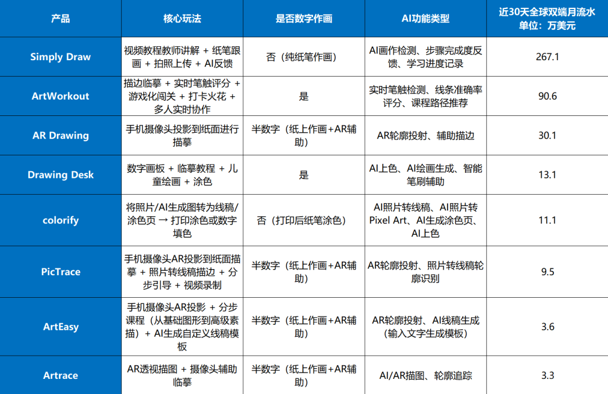
5月图形graphics[ˈɡræfɪks] n. 图形与设计类应用全球双端畅销榜中排名
靠前的几款绘画学习App功能对比comparison[kəmˈpærɪsn] n. 对比及其最近
30天的分成后流水 | 数据来源source[sɔːrs] n. 来源：App Magic
AI 更是在加速accelerate[əkˈseləreɪt] v. 加速一切，不止于作画，做什么，都能更快的产出结果。但在上述 App 中，唯一一个没有走数字作画路线、AI 技术应用最克制的「Simply Draw」，却拿下了最好的成绩achievement[əˈtʃiːvmənt] n. 成绩，近期最高单月分成后流水达到了 330 万美元+（超 2000 万人民币）。
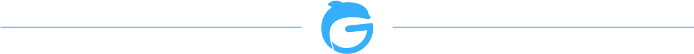
纸笔不是怀旧nostalgia[nɒˈstældʒə] n. 怀旧，是家长真正想要的
「Simply Draw」作为一款绘画教学 App，不能进行数字创作creation[kriˈeɪʃn] n. 创作，也没有实时指导功能。App 的交互interaction[ˌɪntərˈækʃn] n. 交互很简单，产品提供绘画图案，用户选定图案后准备纸笔，跟随产品提供的视频步骤作画，完成后拍照上传，整个过程唯一用到 AI 的部分是，上传后 AI 对用户的画作进行检测并评价。
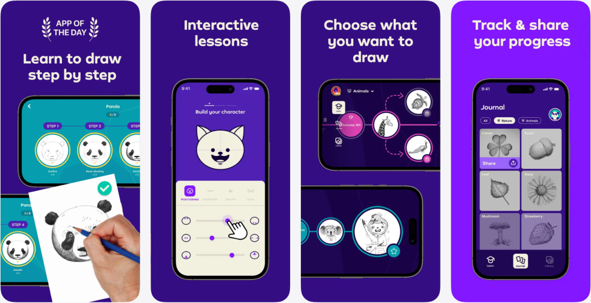
「Simply Draw」产品宣传publicity[pʌbˈlɪsəti] n. 宣传页 | 图源：App Store
这个十分简洁的产品，在 2025 年的下半年收入快速上涨surge[sɜːrdʒ] v. 上涨，最高单月分成后流水一度超过 300 万美元，至今月流水仍保持在 200 万美元以上。
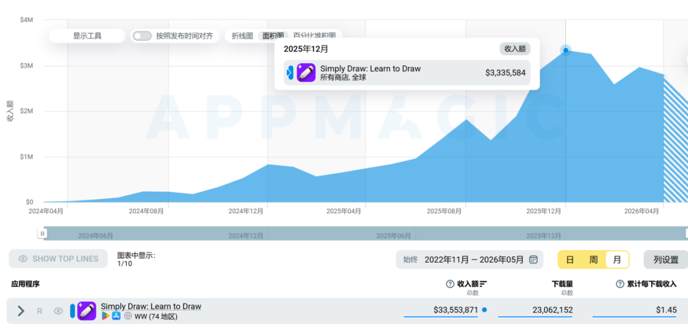
2025年12月，「Simply Draw」
月流水revenue[ˈrevənjuː] n. 流水达333万美元 | 图源：App Magic
在分析了广告、产品设计后，我们发现，这款产品的流水显著significant[sɪɡˈnɪfɪkənt] adj. 显著的高于同类 App，是因为搭建了一套更强的家长购买框架。
观看「Simply Draw」的广告素材material[məˈtɪriəl] n. 素材可以发现，其素材内容几乎清一色以儿童学习绘画为主题，基本可以概括为跟随「Simply Draw」，孩子独立完成了漂亮画作，在成就感驱使下想继续学画。
「Simply Draw」热度popularity[ˌpɑːpjuˈlærəti] n. 热度较高的视频素材，视频来自广大大
聚焦儿童受众audience[ˈɔːdiəns] n. 受众，「Simply Draw」则不仅是一款绘画学习 App，也是一款儿童教育产品，拥有使用者是孩子、付费决策者是家长的典型属性。
这也是为什么“纸笔”反而成了它的优势advantage[ədˈvæntɪdʒ] n. 优势，而不是劣势。
目前 3-12 岁孩子的家长，大多出生于 80 年代末到 90 年代初，纸笔作画是他们成长记忆里“学画画”的正规路径，叠加目前电子设备泛滥proliferation[prəˌlɪfəˈreɪʃn] n. 泛滥，加重家长对孩子使用电子产品的顾虑。因此，市面上主流的绘画学习 App，无论其设计得多么吸引人、门槛barrier[ˈbæriər] n. 门槛多么低，也很难拿到为孩子付费的那张订单。
线下纸笔绘画班则走到了另一种极端extreme[ɪkˈstriːm] n. 极端：价格高、课程长、要接送，目标更偏向于专业培养。对于“只是想让孩子有个像样的兴趣或者技能”的多数家长来说，投入investment[ɪnˈvestmənt] n. 投入产出比并不划算。
「Simply Draw」恰好嵌在这两者中间，孩子在用真实genuine[ˈdʒenjuɪn] adj. 真实的的纸笔学画画，但免去了高金钱与时间投入。

「Simply Draw」
在卖“家长能验收的学习成果outcome[ˈaʊtkʌm] n. 成果”
但纸笔作画不足以解释家长愿意付费的全部原因，「Simply Draw」在产品设计层面完全拿捏grasp[ɡræsp] v. 拿捏家长心理。
首先，在下载并注册register[ˈredʒɪstər] v. 注册「Simply Draw」后，如果设置注册年龄在儿童区间内（笔者设置年龄为 10 岁，结合教育类产品常见的年龄分层，设置年龄在 13 岁以下应该均会弹出该提醒），会提醒需要有家长陪伴，并询问用户是否在家长允许的情况下使用应用。
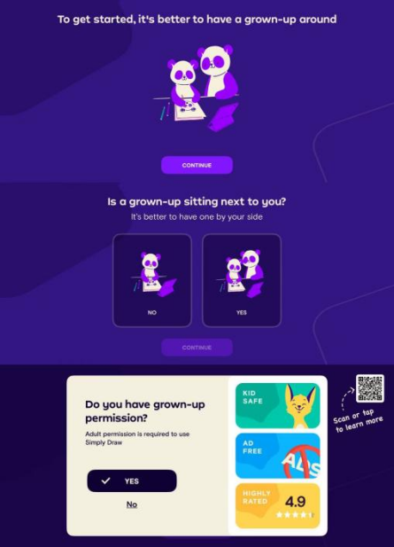
「Simply Draw」 建议用户
在家长陪伴accompany[əˈkʌmpəni] v. 陪伴下使用 | 图源：产品截图
这个细节看似普通，但它传递convey[kənˈveɪ] v. 传递的信号很明确，这是一款需要家长参与的学习产品，不是孩子自己随便玩的游戏。
而在这之后，「Simply Draw」几乎每一个交互节点node[noʊd] n. 节点，都在围绕一件事做设计，让家长有东西可以验收。
App 的提醒过后，会让用户在几组图片中进行偏好preference[ˈprefrəns] n. 偏好选择，从而方便之后进行个性化的绘画图案推荐，从而为用户生成个性化的画作推荐，这里为后续推动付费埋了一个钩子。
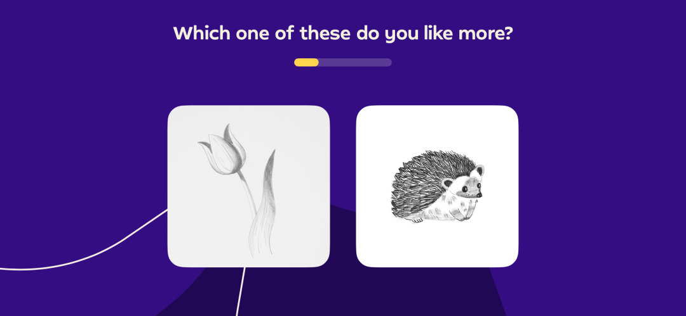
可以看出其所提供的图案pattern[ˈpætərn] n. 图案画风
很童趣，符合align[əˈlaɪn] v. 符合儿童喜好 | 图源：产品截图
对孩子的兴趣进行了解后，会直接进入“第一堂课”，用户需要跟随教程tutorial[tuːˈtɔːriəl] n. 教程，一步步绘制一条鱼。
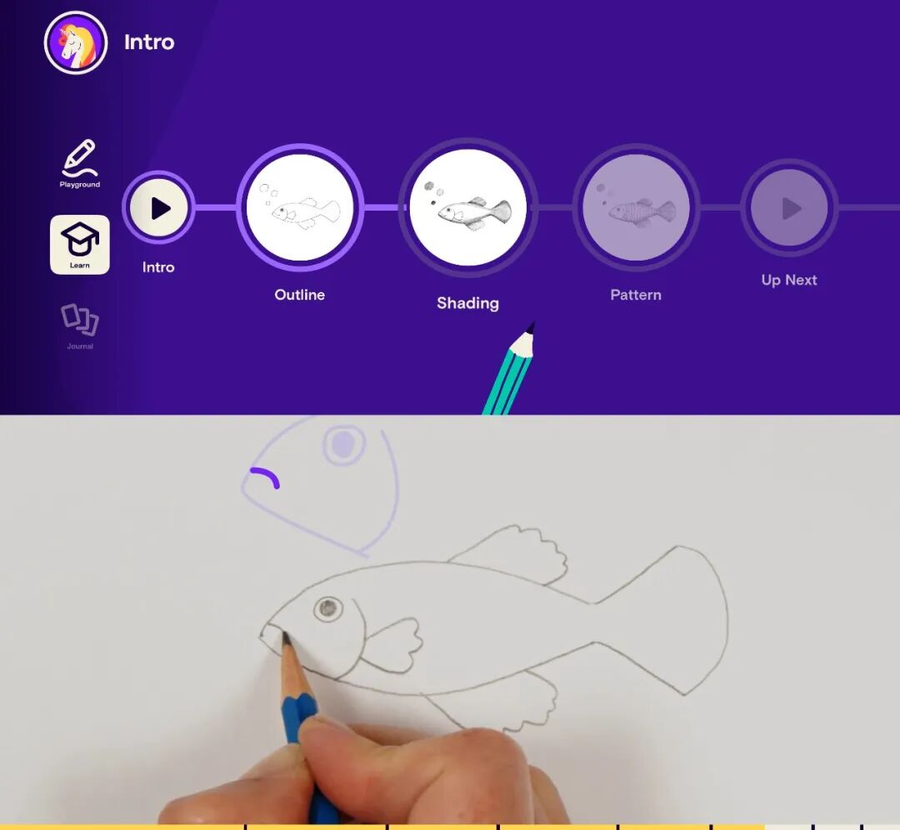
步骤拆解breakdown[ˈbreɪkdaʊn] n. 拆解很详细，每一步老师都会在
视频内指导，且全程throughout[θruːˈaʊt] adv. 全程都在鼓励 | 图源：产品截图
应用内的教学流程十分用心diligent[ˈdɪlɪdʒənt] adj. 用心的。绘画步骤拆解很细致meticulous[məˈtɪkjələs] adj. 细致的，每一步老师都会在视频内演示并指导，耐心讲解、全程鼓励。这种设计固然会产生内容成本，但传递给家长一个信号，孩子并不是在“按提示描线”，而是有一个明确的老师在场，上的是一节完整的课程，进一步强化其线下课程替代品substitute[ˈsʌbstɪtuːt] n. 替代品的定位。
完成画作后，用户可选择拍照上传，AI 将根据教学内容，检测detect[dɪˈtekt] v. 检测画作是否完成并给出反馈。这也是产品中主要应用apply[əˈplaɪ] v. 应用 AI 技术的地方。
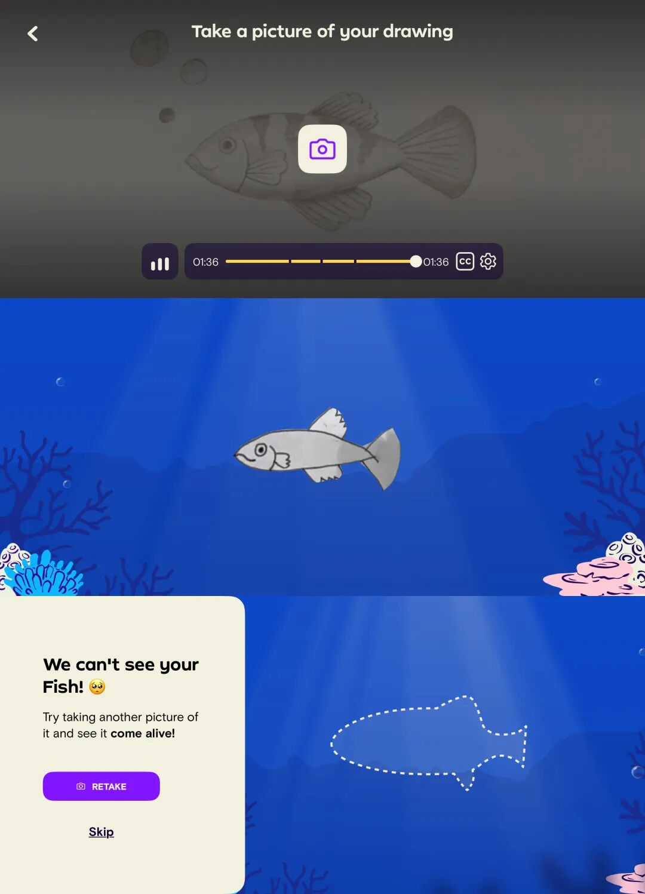
在选择上传upload[ˈʌploʊd] v. 上传后，这条鱼将“游”起来。AI会检查inspect[ɪnˈspekt] v. 检查画作
的阴影完成度completeness[kəmˈpliːtnəs] n. 完成度，并对画的较为优秀的部分进行夸奖；
如果选择choice[tʃɔɪs] n. 选择不上传，也可跳过 | 图源：产品截图
而根据我们的测评assessment[əˈsesmənt] n. 测评，AI 不评价“画得好不好看”，它只检测关键步骤有没有完成，如阴影覆盖到位没有、轮廓比例对不对。给出的是明确explicit[ɪkˈsplɪsɪt] adj. 明确的的完成信号，并对完成度较高的部分进行夸奖。
这个看似克制restrained[rɪˈstreɪnd] adj. 克制的的设计选择，是家长的验收凭据。家长不需要懂绘画，也能立刻判断孩子有没有按教学完成任务——AI 给出的是一份可量化quantify[ˈkwɑːntɪfaɪ] v. 量化的学习反馈。
绘画结束后，用户可以把画作拍照存入“Journal”画廊，记录绘画的成长进度，构成完整的成长轨迹trajectory[trəˈdʒektəri] n. 轨迹，也类似于某些家长在线下会给孩子做的绘画墙。
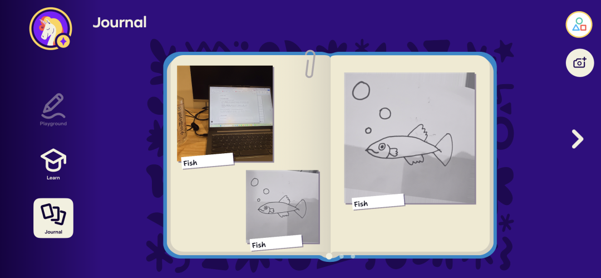
“Journal”支持展示display[dɪˈspleɪ] v. 展示用户的所有画作，用户还可选择上传
自己在应用外的画作，展现绘画历程journey[ˈdʒɜːrni] n. 历程 | 图源：产品截图
通过视频教程+AI 结果反馈+学习画廊的 3 层设计，「Simply Draw」为家长构建了一个可持续sustainable[səˈsteɪnəbl] adj. 可持续的获得孩子学习、成长反馈的路径，逃脱出工具定位，将自己包装成为“线下艺术课的线上平替”。这也是为什么，在有些家长的眼里perspective[pərˈspektɪv] n. 视角，「Simply Draw」提供的是"美术老师的课"，而不是工具 App。
而这种定位positioning[pəˈzɪʃənɪŋ] n. 定位的转换，是撑起它高流水的其中一个主因。
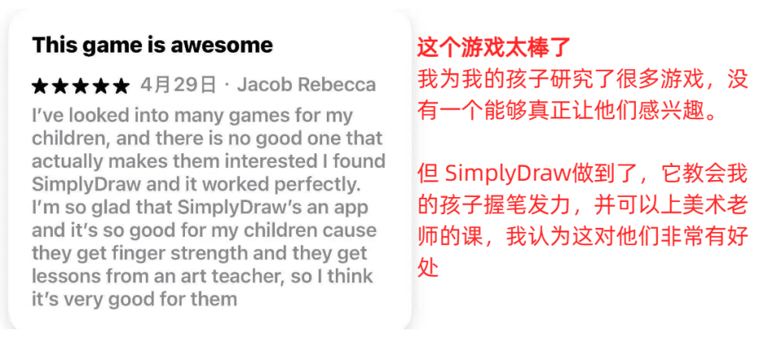
一位美国家长的评论comment[ˈkɑːment] n. 评论，来自 App Store
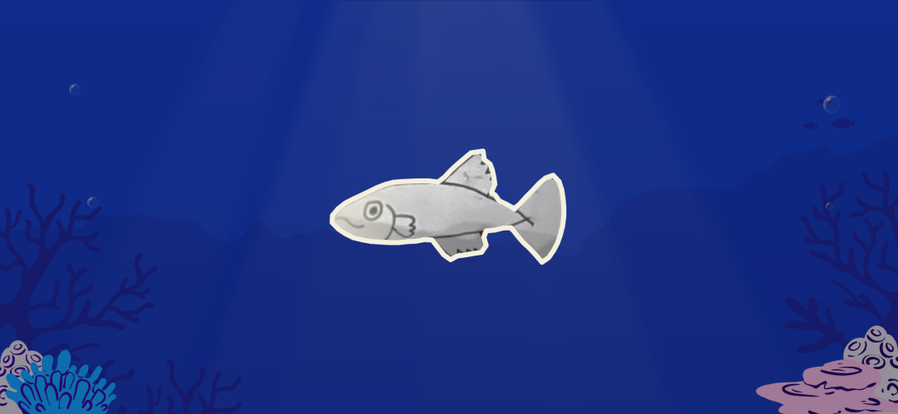
而对于产品的真正使用者，每次结束finish[ˈfɪnɪʃ] v. 结束绘画、
拍照photograph[ˈfoʊtəɡræf] v. 拍照上传后，画作能够“动起来”；画作增多increase[ɪnˈkriːs] v. 增多后，
支持孩子对自己的画作进行组合拼装assemble[əˈsembl] v. 拼装等，
也保持了一定的趣味性 | 图源：产品截图

「Simply Draw」的付费墙卡在了情绪emotion[ɪˈmoʊʃn] n. 情绪曲线的最高点。“画鱼第一课”完成之后，孩子花了差不多 30 分钟的时间必须跟完整个教程、体验一次完整的成就感闭环loop[luːp] n. 闭环，才会遇到订阅提示。
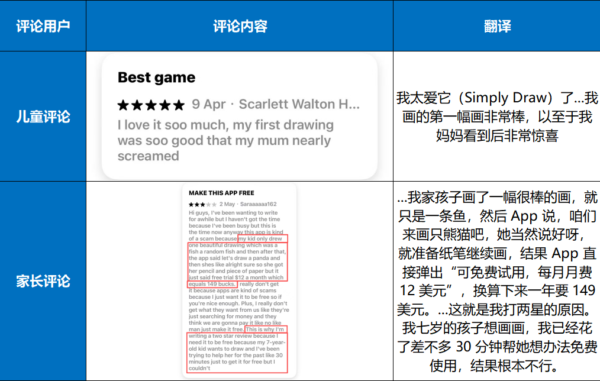
评论区中，儿童用户大多数都表现demonstrate[ˈdemənstreɪt] v. 表现出对应用
的爱不释手adore[əˈdɔːr] v. 喜爱，如：“...我的第一幅画太棒了...。”
但家长的评论却集中指控accuse[əˈkjuːz] v. 指控「Simply Draw」
收费charge[tʃɑːrdʒ] v. 收费/价格过高，在激起孩子们的兴趣后，却不能
让孩子免费使用usage[ˈjuːsɪdʒ] n. 使用下去；可以得出conclude[kənˈkluːd] v. 得出，「Simply Draw」
已同时获得了孩子和家长的两方面认可recognition[ˌrekəɡˈnɪʃn] n. 认可，
只差一个付费的决策decision[dɪˈsɪʒn] n. 决策 | 评论来自App Store
孩子投入时间、也获得了成就感，而父母也看到了成果，此时遇到付费墙，即便是远高于同类绘画App的价格，因为其课程定位与可验收verify[ˈverɪfaɪ] v. 验收的成绩，不少的父母会选择打开钱包。
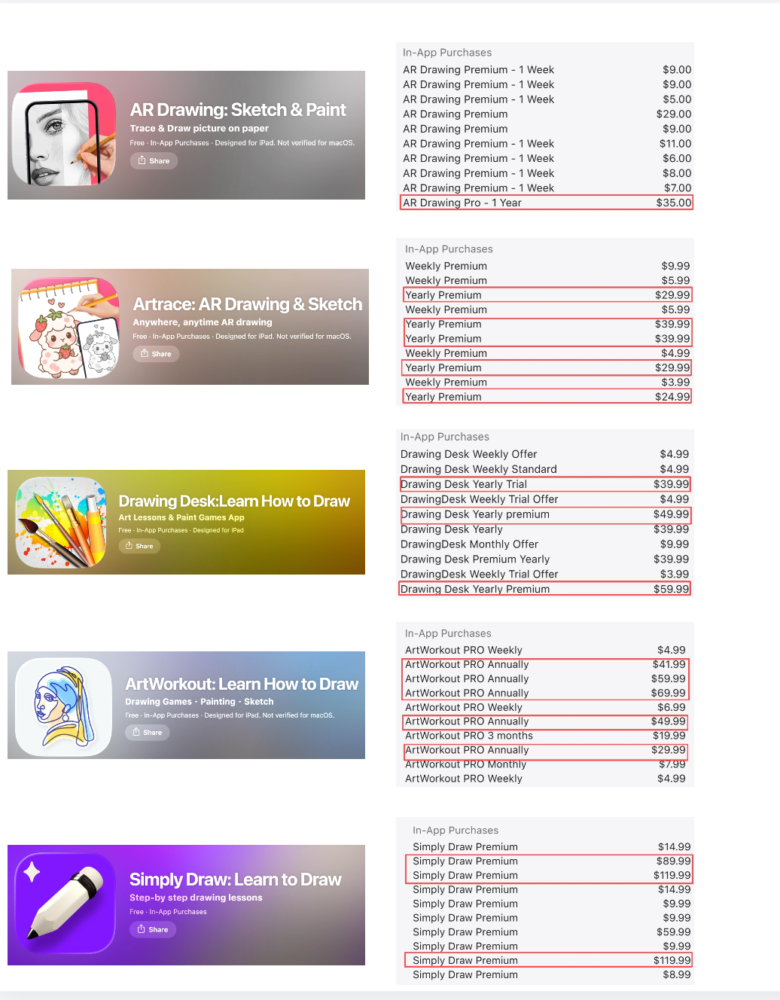
美国区 App Store 高流水绘画学习类 App 年费fee[fiː] n. 年费对比，
可以看出此类 App 的年费大都在 29 美元~59 美元之间range[reɪndʒ] n. 范围，
「Simply Draw」 年费为89 美元 | 图源：App Store
此外，「Simply Draw」还提供 5 个账号档位注册，一家人都可以各自定制学习计划，进一步减轻多孩家庭的疑虑、提升付费的性价比value[ˈvæljuː] n. 性价比。

回看「Simply Draw」的收入曲线，与付费投放和苹果 App Store 假日流量扶持/编辑背书重叠overlap[ˌoʊvərˈlæp] v. 重叠，再通过将一个强情绪 aha moment 放到了订阅流程中，实现收割。
而广告里的免费使用误导，叠加用户在情绪高点时遇到强制付费的反差contrast[ˈkɑːntræst] n. 反差，构成了近忧。
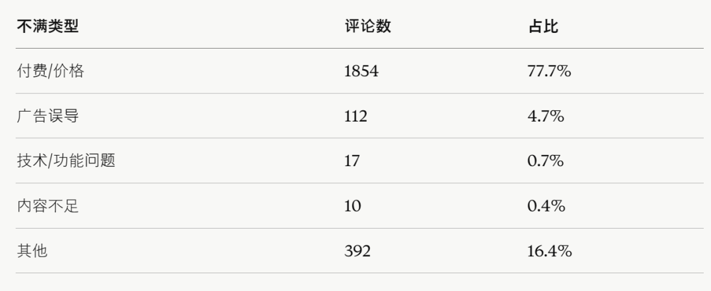
「Simply Draw」美国等五大流水贡献contribution[ˌkɑːntrɪˈbjuːʃn] n. 贡献市场
近 90 天用户1~2星评论分析analysis[əˈnæləsɪs] n. 分析总结，由 AI 整理
而从长远来看，「Simply Draw」默默将其转化transform[trænsˈfɔːrm] v. 转化成课程的定位，必然需要承载付费群体对孩子长期学习成果的期待。
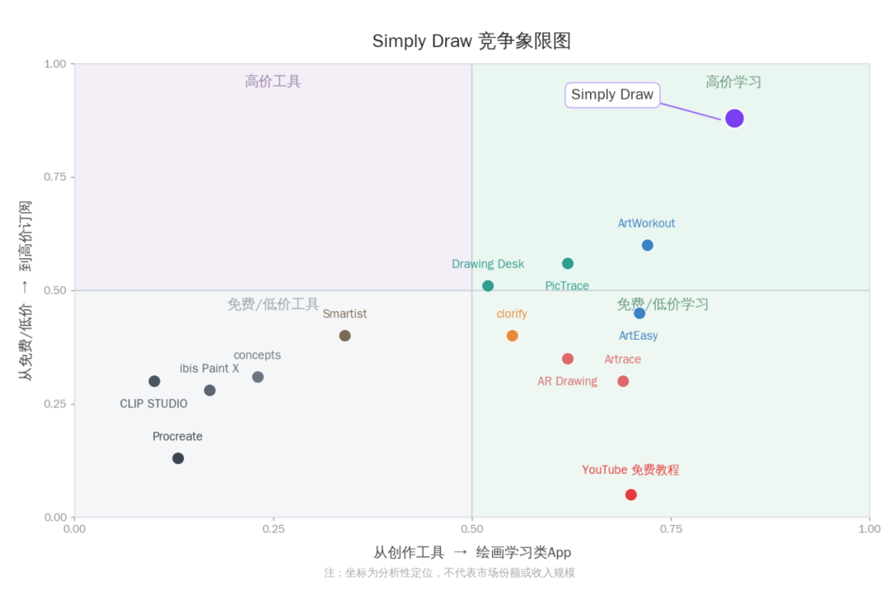
基于功能结构structure[ˈstrʌktʃər] n. 结构与年费订阅价格
而绘制render[ˈrendər] v. 绘制的「Simply Draw」定位
竞争competition[ˌkɑːmpəˈtɪʃn] n. 竞争象限图 | 数据来源：App Magic
一幅幅画作的背后能否撑起一个画画的学习体系system[ˈsɪstəm] n. 体系，是刚探索出路线流水起势不久的「Simply Draw」将“第一次画出鱼”的惊喜变成真正的长期学习价值必须回答的问题，我们将继续关注「Simply Draw」的这场实验。
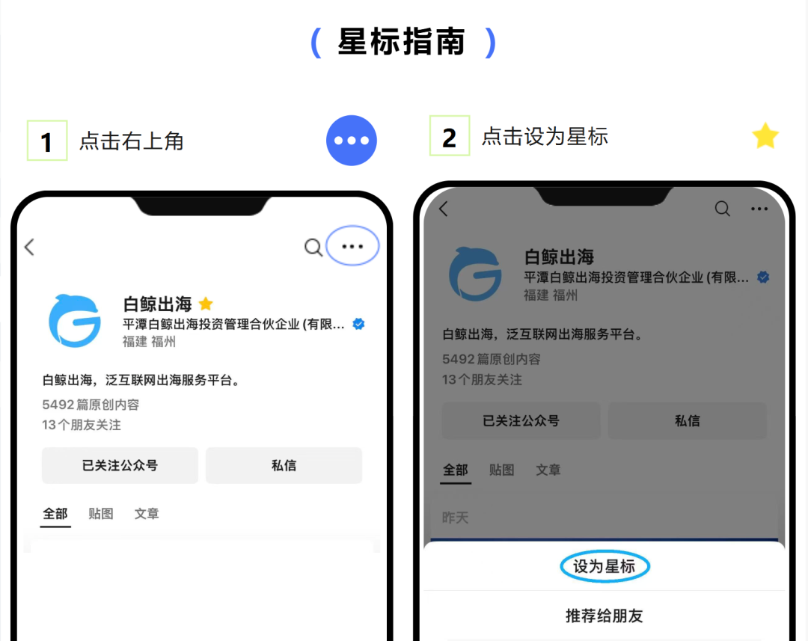
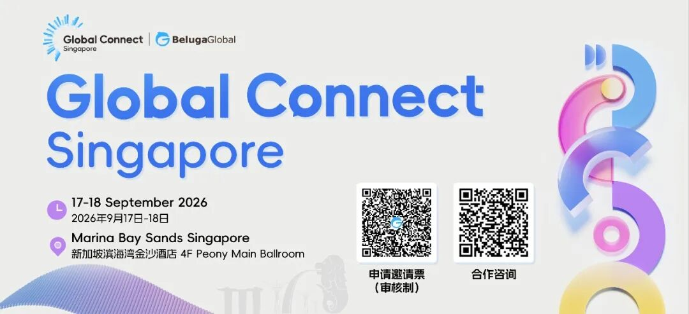
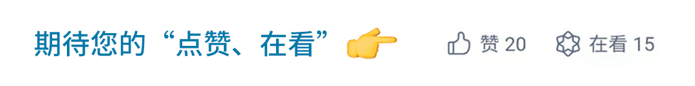
杭州5人小团队，把「观鸟」送上了畅销榜chart[tʃɑːrt] n. 榜单
在美递交IPO申请，「App工厂」估值valuation[ˌvæljuˈeɪʃn] n. 估值200亿美元？
千万美元融资financing[ˈfaɪnænsɪŋ] n. 融资、国内团队就位，游戏社交做硬件更靠谱？
学做菜合成synthesize[ˈsɪnθəsaɪz] v. 合成月入1.5亿，半道出家的点点互动干赢“头号玩家”？
他花两天做的AI游戏，月成本expense[ɪkˈspens] n. 成本不到100元，却让玩家争着烧Token
Cassie | 微信：18506490569
Ares | 微信：18606066421
Lina | 微信：13381020131
David | 微信：13809501924
Echo | 微信：13003974360
游戏、应用等APP出海overseas[ˌoʊvərˈsiːz] adj. 出海对接
Shadow | 微信：18650708568
Demerly | 微信：18150844790
Lia | 微信：baijing018
魏方丹 | 微信：bjbandari02
（添加请备注specify[ˈspesɪfaɪ] v. 备注姓名、公司及职位）